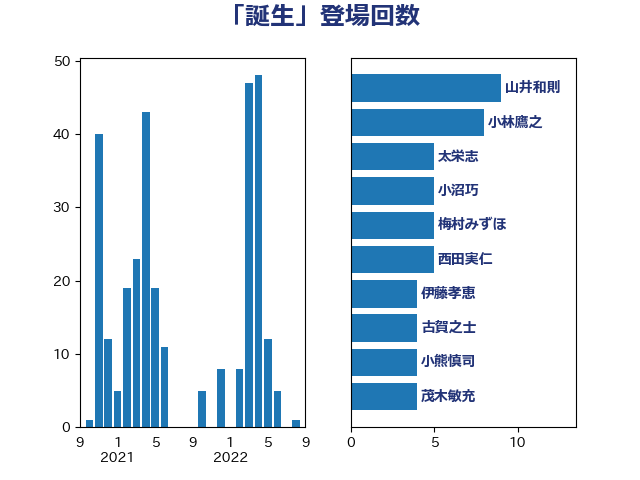

単語「誕生」

| 山井和則 | 立憲民主党 | 9 回 |
| 小林鷹之 | 自由民主党 | 8 回 |
| 太栄志 | 立憲民主党 | 5 回 |
| 小沼巧 | 立憲民主党 | 5 回 |
| 梅村みずほ | 日本維新の会 | 5 回 |
| 西田実仁 | 公明党 | 5 回 |
| 伊藤孝恵 | 国民民主党 | 4 回 |
| 古賀之士 | 立憲民主党 | 4 回 |
| 小熊慎司 | 立憲民主党 | 4 回 |
| 茂木敏充 | 自由民主党 | 4 回 |
| 金村龍那 | 日本維新の会 | 4 回 |
| 長浜博行 | 無所属 | 4 回 |
| 青木愛 | 立憲民主党 | 4 回 |
| 仁木博文 | 無所属 | 3 回 |
| 伊藤達也 | 自由民主党 | 3 回 |
| 勝部賢志 | 立憲民主党 | 3 回 |
| 吉田統彦 | 立憲民主党 | 3 回 |
| 大西健介 | 立憲民主党 | 3 回 |
| 斎藤アレックス | 国民民主党 | 3 回 |
| 梅村聡 | 日本維新の会 | 3 回 |
| 沢田良 | 日本維新の会 | 3 回 |
| 浅野哲 | 国民民主党 | 3 回 |
| 石川博崇 | 公明党 | 3 回 |
| 音喜多駿 | 日本維新の会 | 3 回 |
| 三浦信祐 | 公明党 | 2 回 |
| 上杉謙太郎 | 自由民主党 | 2 回 |
| 串田誠一 | 日本維新の会 | 2 回 |
| 井上哲士 | 日本共産党 | 2 回 |
| 大野敬太郎 | 自由民主党 | 2 回 |
| 小山展弘 | 立憲民主党 | 2 回 |
| 小泉進次郎 | 自由民主党 | 2 回 |
| 山口那津男 | 公明党 | 2 回 |
| 川田龍平 | 立憲民主党 | 2 回 |
| 後藤祐一 | 立憲民主党 | 2 回 |
| 林芳正 | 自由民主党 | 2 回 |
| 梶山弘志 | 自由民主党 | 2 回 |
| 江田憲司 | 立憲民主党 | 2 回 |
| 河野義博 | 公明党 | 2 回 |
| 泉健太 | 立憲民主党 | 2 回 |
| 浅田均 | 日本維新の会 | 2 回 |
| 渡辺周 | 立憲民主党 | 2 回 |
| 熊谷裕人 | 立憲民主党 | 2 回 |
| 石田昌宏 | 自由民主党 | 2 回 |
| 福島みずほ | 社会民主党 | 2 回 |
| 自見はなこ | 自由民主党 | 2 回 |
| 舞立昇治 | 自由民主党 | 2 回 |
| 芳賀道也 | 国民民主党 | 2 回 |
| 若松謙維 | 公明党 | 2 回 |
| 赤木正幸 | 日本維新の会 | 2 回 |
| 足立康史 | 日本維新の会 | 2 回 |
| 阿部知子 | 立憲民主党 | 2 回 |
| 青山大人 | 立憲民主党 | 2 回 |
| 須藤元気 | 無所属 | 2 回 |
| 鷲尾英一郎 | 自由民主党 | 2 回 |
| 三木圭恵 | 日本維新の会 | 1 回 |
| 上川陽子 | 自由民主党 | 1 回 |
| 上野通子 | 自由民主党 | 1 回 |
| 下村博文 | 自由民主党 | 1 回 |
| 中村裕之 | 自由民主党 | 1 回 |
| 中谷一馬 | 立憲民主党 | 1 回 |
| 丸川珠代 | 自由民主党 | 1 回 |
| 伊佐進一 | 公明党 | 1 回 |
| 伴野豊 | 立憲民主党 | 1 回 |
| 佐々木さやか | 公明党 | 1 回 |
| 前原誠司 | 国民民主党 | 1 回 |
| 加藤竜祥 | 自由民主党 | 1 回 |
| 北村経夫 | 自由民主党 | 1 回 |
| 古賀友一郎 | 自由民主党 | 1 回 |
| 吉良州司 | 無所属 | 1 回 |
| 嘉田由紀子 | 無所属 | 1 回 |
| 国光あやの | 自由民主党 | 1 回 |
| 堤かなめ | 立憲民主党 | 1 回 |
| 塩村あやか | 立憲民主党 | 1 回 |
| 塩谷立 | 自由民主党 | 1 回 |
| 室井邦彦 | 日本維新の会 | 1 回 |
| 宮崎雅夫 | 自由民主党 | 1 回 |
| 宮本周司 | 自由民主党 | 1 回 |
| 宮本岳志 | 日本共産党 | 1 回 |
| 小宮山泰子 | 立憲民主党 | 1 回 |
| 小沢雅仁 | 立憲民主党 | 1 回 |
| 小渕優子 | 自由民主党 | 1 回 |
| 小西洋之 | 立憲民主党 | 1 回 |
| 尾身朝子 | 自由民主党 | 1 回 |
| 山崎誠 | 立憲民主党 | 1 回 |
| 山本香苗 | 公明党 | 1 回 |
| 山東昭子 | 自由民主党 | 1 回 |
| 山田勝彦 | 立憲民主党 | 1 回 |
| 平井卓也 | 自由民主党 | 1 回 |
| 平山佐知子 | 無所属 | 1 回 |
| 新垣邦男 | 立憲民主党 | 1 回 |
| 森まさこ | 自由民主党 | 1 回 |
| 横沢高徳 | 立憲民主党 | 1 回 |
| 櫻井周 | 立憲民主党 | 1 回 |
| 浜田聡 | NHK党 | 1 回 |
| 海江田万里 | 立憲民主党 | 1 回 |
| 源馬謙太郎 | 立憲民主党 | 1 回 |
| 田中健 | 国民民主党 | 1 回 |
| 田島麻衣子 | 立憲民主党 | 1 回 |
| 田村憲久 | 自由民主党 | 1 回 |
| 石垣のりこ | 立憲民主党 | 1 回 |
| 福山哲郎 | 立憲民主党 | 1 回 |
| 稲富修二 | 立憲民主党 | 1 回 |
| 稲田朋美 | 自由民主党 | 1 回 |
| 笠井亮 | 日本共産党 | 1 回 |
| 笹川博義 | 自由民主党 | 1 回 |
| 篠原豪 | 立憲民主党 | 1 回 |
| 紙智子 | 日本共産党 | 1 回 |
| 美延映夫 | 日本維新の会 | 1 回 |
| 藤丸敏 | 自由民主党 | 1 回 |
| 藤川政人 | 自由民主党 | 1 回 |
| 藤巻健太 | 日本維新の会 | 1 回 |
| 西村康稔 | 自由民主党 | 1 回 |
| 西田昌司 | 自由民主党 | 1 回 |
| 角田秀穂 | 公明党 | 1 回 |
| 谷合正明 | 公明党 | 1 回 |
| 赤嶺政賢 | 日本共産党 | 1 回 |
| 赤羽一嘉 | 公明党 | 1 回 |
| 足立敏之 | 自由民主党 | 1 回 |
| 野田佳彦 | 立憲民主党 | 1 回 |
| 野間健 | 立憲民主党 | 1 回 |
| 鈴木宗男 | 日本維新の会 | 1 回 |
| 鈴木淳司 | 自由民主党 | 1 回 |
| 阿部司 | 日本維新の会 | 1 回 |
| 阿部弘樹 | 日本維新の会 | 1 回 |
| 青山繁晴 | 自由民主党 | 1 回 |
| 馬場伸幸 | 日本維新の会 | 1 回 |
| 高木かおり | 日本維新の会 | 1 回 |
| 高橋光男 | 公明党 | 1 回 |